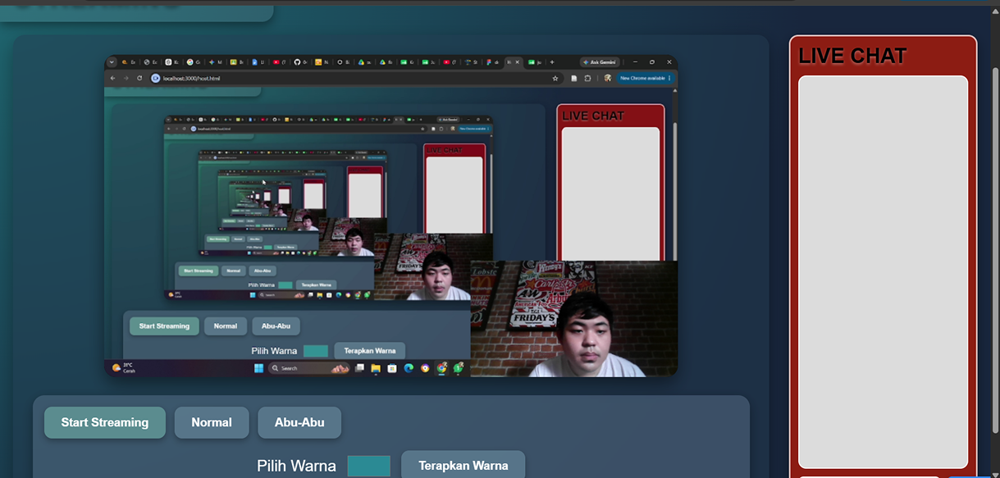
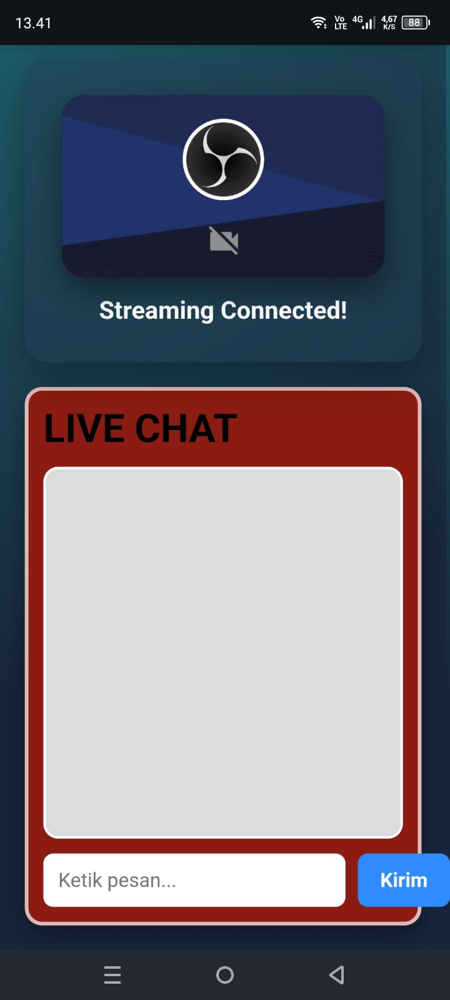
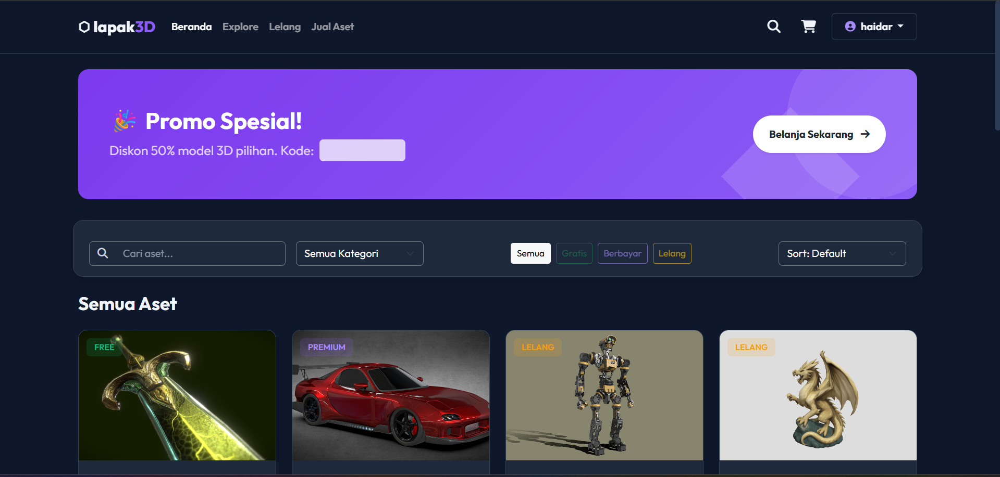
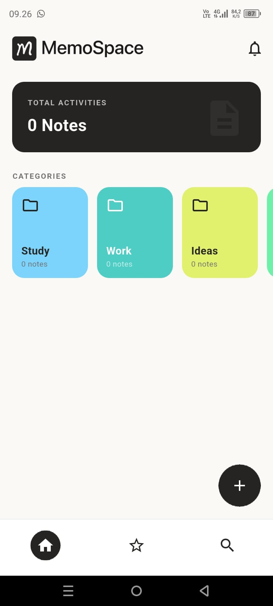
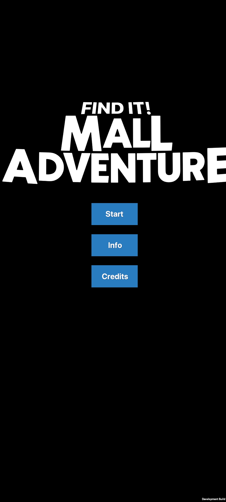

Semester 4


Arsitektur Server Siaran Live Multimedia (Ubuntu Linux):
Proyek ini berfokus pada pembangunan dan konfigurasi infrastruktur web server siaran langsung (live broadcast) audio/video berbasis sistem operasi Ubuntu Server.
Konfigurasi & Perangkat Lunak:
- Live Audio Encoder & Broadcast: Mengintegrasikan perangkat lunak DarkIce (sebagai encoder audio live langsung dari input mikrofon) dan Icecast2 (sebagai streaming media server).
- Optimasi & Aksesibilitas Jaringan: Dikonfigurasi untuk menangani permintaan multi-client streaming secara simultan melalui jaringan lokal maupun publik dengan latensi rendah dan stabilitas koneksi yang teruji.

Platform Marketplace Berbelanja Aset 3D Interaktif:
Lapak 3D adalah platform e-commerce yang dirancang khusus untuk transaksi jual-beli dan pameran aset digital 3D.
Fitur & Keunggulan Platform:
- Inspeksi Produk 360° Real-Time: Calon pembeli dapat melihat, memutar, dan memeriksa detail tekstur serta pencahayaan model 3D secara langsung dari peramban (browser) sebelum memutuskan untuk membeli.
- Pengalaman Belanja Modern: Mengintegrasikan sistem katalog produk interaktif untuk kreator aset 3D, pengembang game, dan desainer dalam memasarkan karya digital secara profesional tanpa perlu instalasi plugin tambahan.

Pengembangan Aplikasi Mobile Manajemen Catatan & Pengingat:
Memospace adalah aplikasi mobile productivity yang dirancang untuk mengorganisir memori, tugas harian, dan jadwal kegiatan dengan antarmuka yang bersih, intuitif, dan responsif.
Fitur Aplikasi & Framework Flutter:
- Cross-Platform Development: Dikembangkan menggunakan framework Flutter untuk performa antarmuka yang mulus pada perangkat Android.
- Sistem Pengelompokan & Penyimpanan: Dilengkapi fitur pengelompokan memori berbasis label warna, pencarian cepat, serta manajemen penyimpanan lokal & cloud.

Game Eksplorasi Interaktif Berbasis Mixed Reality (MR):
Game petualangan interaktif yang menggabungkan lingkungan nyata dengan elemen virtual 3D dalam simulasi pencarian target dan penyelesaian teka-teki berlatar belakang pusat perbelanjaan (mall).
Arsitektur Game Engine & Imersivitas:
- Unity Engine & Framework MR: Dikembangkan di atas Unity Engine memanfaatkan Vuforia Engine dan OpenXR untuk pelacakan target (image target tracking) serta pemetaan interaksi 3D yang akurat.
- Gameplay Mechanics: Menawarkan pengalaman eksplorasi imersif melalui tantangan petunjuk, interaksi objek spatial, dan penyelesaian teka-teki secara real-time.